Sound Recording and Editing
Sound Recording Devices: When to use what?
Tascam DR-40 Field Recorder
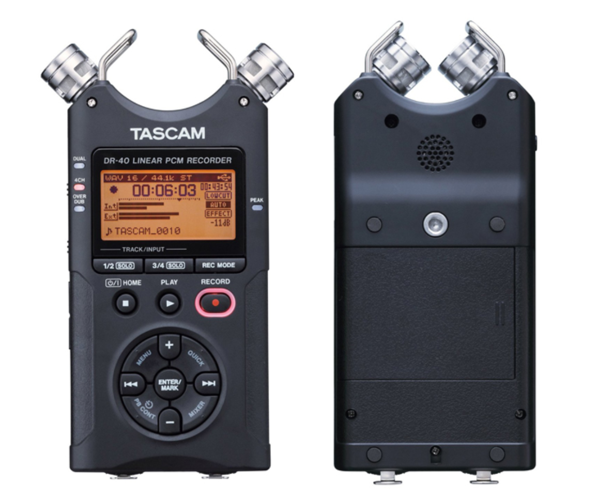Tascam handheld field recorders operate on batteries and are designed to be portable, so it is adequate to be used outdoors, such as for capturing ambient sound. The Tascam recorders have 2 internal microphones, but it is also possible to connect up to two external microphones. All the files recorded using the Tascam recorder saves on to an SD card, and the card is ejectable and can be plugged into your computer for file transfer.
Below Youtube video is one of many great available tutorials online on how to use the Tascam recorder.
External Microphones
You can attach external microphones to the Tascam field recorder. The external microphone can be attached using the XLR Male-Female cable on the bottom of the Tascam recorder. Here are two external microphones that are available for you to borrow from the equipment room:
Audio-Technica Shotgun Microphone:
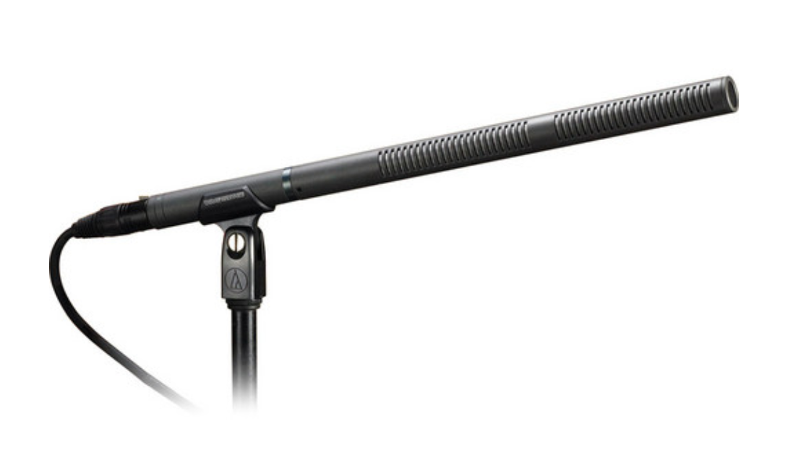The shotgun microphone is good for recording of focused sounds in surroundings, both indoor and outdoor. It provides the narrow acceptance angle desirable for long-distance sound pickup, featuring sound rejection from the sides and rear of microphone. It operates on battery or phantom power. When you are using the shotgun microphone with Tascam field recorder, please make sure that the "External In" (EXT IN) setting is set to MIC + PHANTOM.
Sennheiser Vocal Microphone:
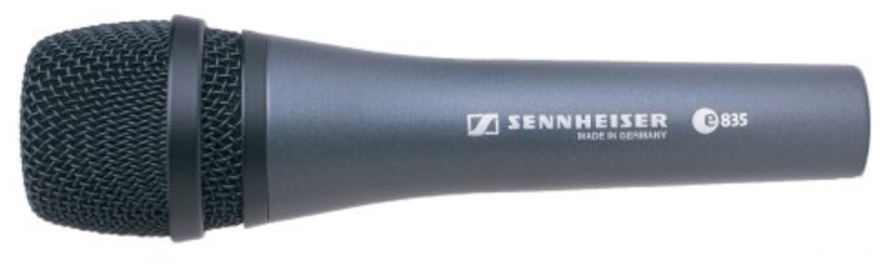The Vocal microphone is good for recording speech or vocals. This is a standard microphone that you would see on stage, interviews and karaoke. When you are using the vocal microphone with Tascam field recorder, please make sure that the "External In" (EXT IN) setting is set to MIC.
Blue Yeti USB Microphone
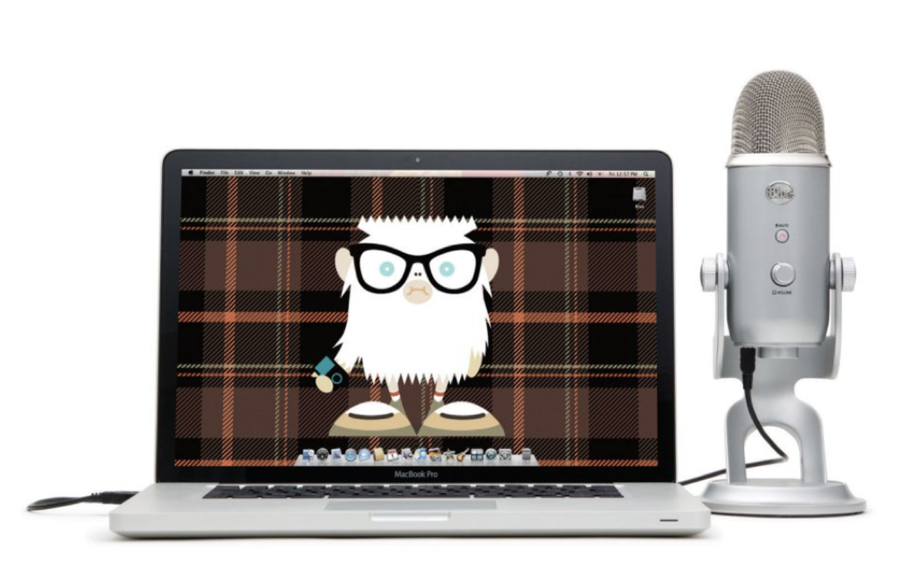The Blue Yeti USB Microphone is a simple USB plug-in microphone that is generally used when recording in a static setting using your computer. It is generally used for recording sound in a studio / indoor locations. It is easily useable, as all you need to do is plug it into your USB port on your computer and select "BLUE YETI 2.0" as your audio input device in your system preferences / audio editing software.
For more detailed information about how to use the Blue Yeti microphone, please refer to the product manual.
Podcasting Room

The podcasting room (934) currently has three Shure Dynamic Instrument Microphone, which are designed for vocal and instrumental recording, connected to the MG102 Yamaha mixing board. The mixing board currently allows sound input from all three microphones to be recorded on a single stereo track.
When using the podcasting room with this setup, make sure that the mixing board is powered on (you can tell by whether the light is on next to the power indicator or not). If it is not on, on the top left corner of the mixing board, there is a switch to turn on the board.
The podcasting room is available for you to reserve. You can book a slot to use the room using this google calendar appointment page. When booking a slot, in the "description" field, please put the name of the course you are intending to use the room for.
If you have reserved the podcasting room, come to the IMA lab (826) about 5 - 10 minutes before the reserved time so that you can come pick up the key to the room. Please ask anyone in the equipment room or IMA fellows on duty for the key. Make sure that you return the key back to a fellow BEFORE your reservation time is over. When you are done using the room, please do NOT turn off the computer or the mixing board, but turn off the light and make sure to lock the room. You can book multiple slots in a row, but please be mindful that there may be others needing to use to room.
Recording Room Tone
Generally, the good practice is to record ROOM TONE before and after recording the desired sound for about 5 - 10 seconds. This means that you should record the sound of your surroundings the way it naturally is. For example, if you are recording an interview, wherever you are, you will want to capture the natural sound of your location, whether it be indoors or outdoors. This doesn't apply if you are using the Tascam to capture the sound of traffic, for example. Recording room tone is useful when you are editing sound and you need to insert in some silent gaps. Using the generated silence on your audio editing software will actually sound unnatural as it is not how silence would have sounded like in the environment your recording was done in. Another reason why this is important is because you can sample this part of your recording to run a noise reduction effect, which is usually available in most of audio editing softwares, on the rest of your sound recording.
Sound Editing with Audacity
Audacity is a free and cross-platform (available for all Mac, Windows, Linux computers) audio recording and editing software. Audacity is downloadable through this link.
Importing Sound to Edit
Using Existing Sound files:
On the menu bar, go to File > Import > Audio... to select and import the audio files you want to edit on Audacity.
Recording sound on Audacity:
You can also record sound using Audacity. You would be doing this if you are using the Blue Yeti USB Microphone or are in the podcasting room. Using audacity to record is quite simple.

You simply need to click the red record button to start recording and a new track will appear and you will see sound waves being recorded onto the track. To stop the recording, either click the stop button or hit spacebar.
Tracks
When you upload a sound file or record a sound on audacity, it will create a track on the project window, like the below image.
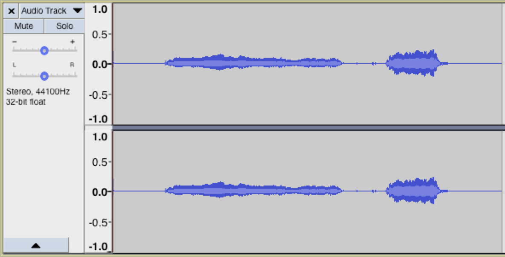You will see that there are two sound waves within a track - for left channel and right channel. This will be the case if your sound file is in stereo. If your sound file is in mono, you will only see one sound file.
There are two buttons on the track that can be useful: Mute and Solo. Mute makes the selected track muted. Solo makes all other tracks EXCEPT the selected track muted.
Tools for Editing
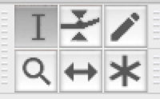Select: The cursor icon is the select tool. You can use this to make a selection within a track. Click to select a start point for audio playback, or click and drag to select a range of audio to play or edit.
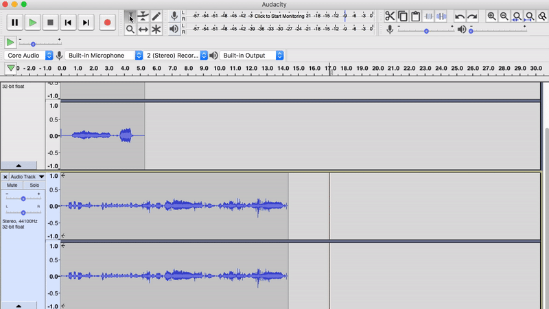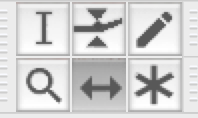
Time Shift ( = Move): The time shift tool lets you synchronize audio in a project by dragging individual or multiple tracks or selection(s) of tracks. Also use this tool to drag individual tracks or clips up or down into another track. You can think of it as a "move" tool.
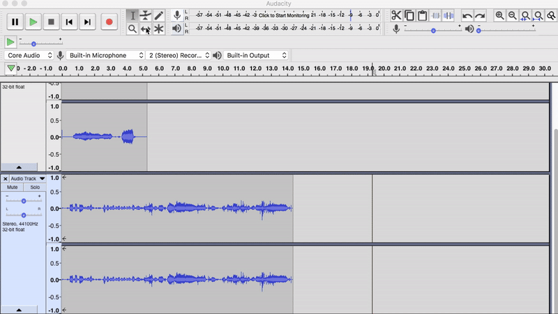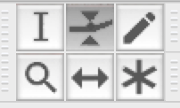
Envelop: This tool allows smooth volume changes to be made over the length of a track by means of embedded volume "control points". Click in the track to create a control point, then set the volume of that point by dragging one of its four vertically arranged "handles".
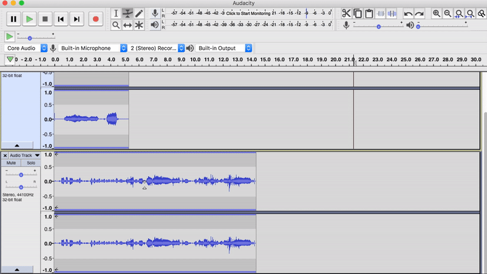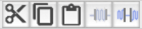
Copy, Paste, Cut and Trim: You can also copy, paste and cut a selection of a track you have made, as well as trim inside and outside of the selection. The shortcuts for copy, paste and cut apply in the exact same way (cmd / ctrl + c for copy, cmd / ctrl + p for paste, cmd / ctrl + x for cut).
You can use the select tool to make a selection within a track, then copy and paste the selection on a black space of the track and use the time shift tool to move it around along time timeline for the track.
The trim outside tool deletes all sound waves OUTSIDE of the selection.
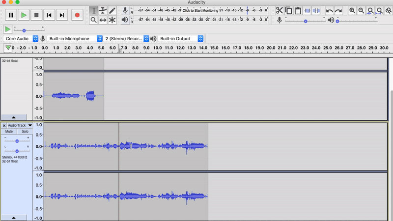The trim inside tool deletes all sound waves INSIDE of the selection.
Effects
There are a number of effects that Audacity provides, but we will only look at the two most widely used ones: Noise Reduction and Amplify.
Noise Reduction: Noise Reduction can reduce constant background sounds such as hum, whistle, whine, buzz, and "hiss", such as tape hiss, fan noise or FM/webcast carrier noise. It is not suitable for individual clicks and pops, or irregular background noise such as from traffic or an audience. This is where the recording of ROOM TONE becomes important. You will be using a section of it as the Noise Reduction Profile.
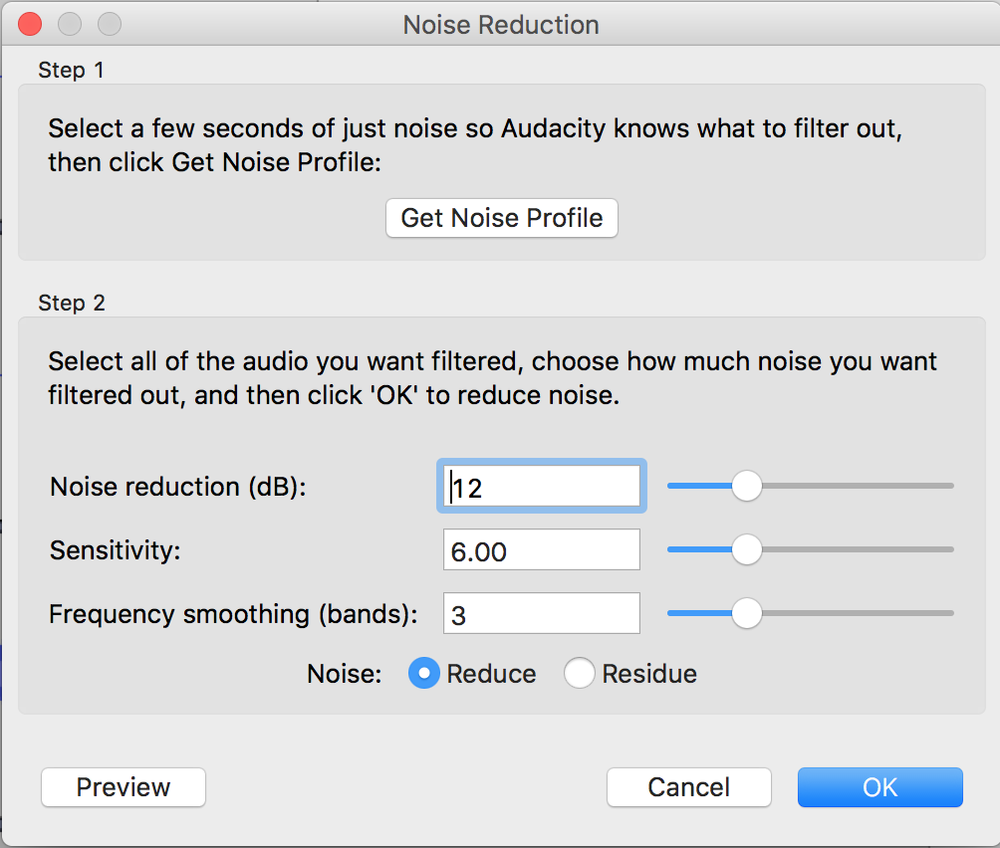First, select a section of room tone. Then go to Effect > Noise Reduction on the menu bar. Click on Get Noise Profile under Step 1. Then, select the whole track or the section of the track you want to run noise reduction on and go to Effect > Noise Reduction again. This time, click OK. You will see that the sound waves of the track / selection subtly changes.

Amplify: The Amplify effect increases the amplitude of the selected sound waves, hence increasing the volume. Note that there a limit to how much a sound can be amplified using a audio editing software, so it is more important for you to monitor while recording to make sure you are getting adequate volume of sound to begin with. You can find the Amplify effect under Effect > Amplify in the menu bar.

Saving your Files
There are multiple ways of saving the recorded files.
- File > Save Project: This means that you are going to only be able to open this file using Audacity. But it also means that all of your tracks will be loaded on a single project file, and if you had made changes to your tracks, all of those edits will also be saved. This is similar to saving a photoshop file as .psd file so when the file is reopened, all of your layers are present. 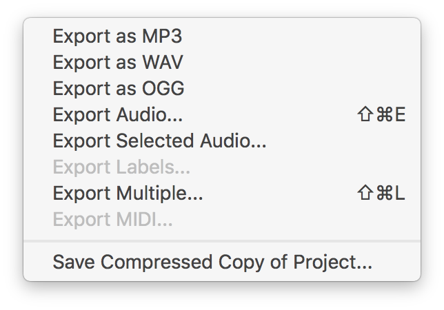
- File > Export > Export Audio...: This option will collapse all the tracks you have on the particular Audacity project into a single sound file. This would be similar to saving a photoshop file as a image format, such as .jpeg or .png. This is probably not the option that you are looking for if whatever you have in your Audacity project window is not exactly how you want your final product to be. This option ignores whether individual tracks are put on mute.
- You can save your audio file in different formats. Above image shows you all the available options of file formats you can export your audio in. The most commonly used audio formats are .wav and .mp3
- If you have multiple tracks for your Audacity project, the Export Audio option will give you a warning like the above image. It is simply telling you that all of your tracks will be collapsed into one single audio file. If that is what you want, you can go ahead and click OK.
- File > Export > Export Selected Audio...: This option exports out the tracks you have selected as one single sound file. The selected tracks will become highlighted in blue, and you can select multiple tracks by clicking on tracks with the shift key down. The selected tracks get combined together into one single sound file. 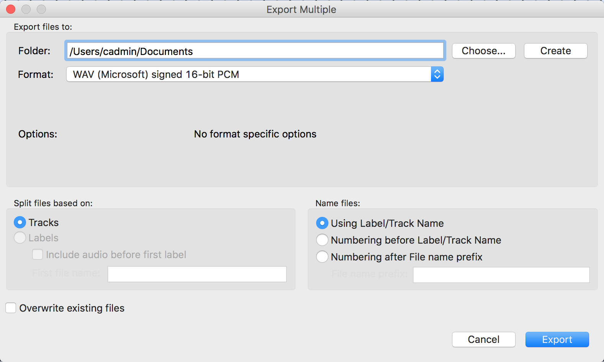
- File > Export > Export Multiple...: This option will let you export all tracks on your Audacity project window as individual sound files per track. If you were editing sound files in one single Audacity window, and want to save all of them individually as sound files, this will be the option for you.
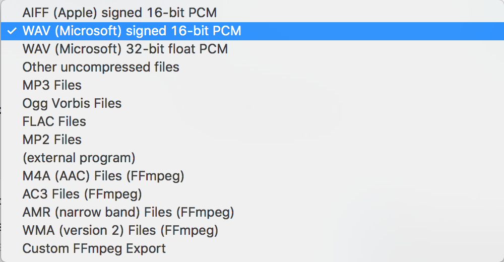
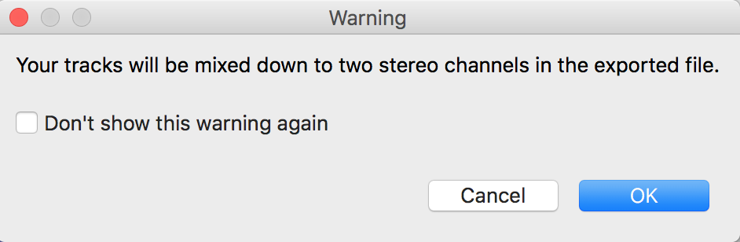
Below Youtube video is one of many great available tutorials online on how to use the Audacity for audio editing.
For more in-depth guide on how to use Audacity, please refer to the software manual and the wiki page.
Open License Audio Resources
There are many places that you can freely download audio files for your use. Some of the files you will find in these sources may be license-free and may not require you to attribute them, and others may ask you to attribute them but you can use and modify the resource however you want to. When in doubt, it is always good to state your sources.
- freesound.org is a platform where you can download sound samples. This is a good place to look for sound effects or sample sounds of instruments.
- archive.org is a place where you can download historical media. This is where you can find archives of radio recordings, audio books, etc., in various languages.
- freemusicarchive.org has open-license music you can download and use. This is a good website to look through for some background music.
- Wikimedia Commons also has freely useable media files that you can browse through.
Checking out Audio Equipment
General Things:
- Please find out the name of the equipment you are trying to borrow beforehand.
- Everything that is available for check out will be listed on IMA Equipment Website. please check this website beforehand to see our inventory. If something is not listed on this page, then we most likely will not have it.
- When checking out multiple things, please provide a list. it makes things a lot more efficient.
- If there is particular equipment you really need, please try to come earlier rather than later.
Tascam Field Recorders:
- Please do not throw away the batteries for the Tascam field recorders, if they run out of battery, you can come to the equipment room and exchange them for new ones.
- Please make sure that the SD card is in the card slot when returning the Tascam.
Microphones:
- Cables are checked out separately. If you need a XLR or audio cable, the you will need to specify when checking out.
- When returning microphones, please make sure that all of the accessories (bags, holders, etc.) are brought back as well.
If you have questions about the equipment check-out policy please email ima.equipment@nyu.edu
Links to Presentation Slide
Here is the link to Dave's slides used for the workshop on March 8, 2018.